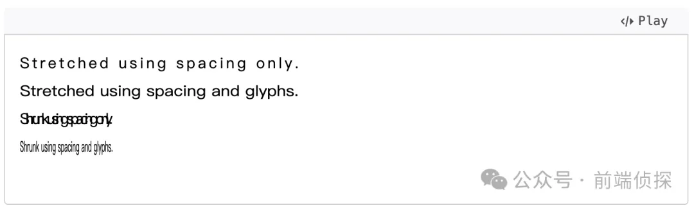

- 24 开发中保证你用得到的 css 小技巧
- 23 您应该了解的 15 个有用的 CSS 属性
- 22 CSS 行元素的截断样式 box-decoration-break 属性
- 21 用 SASS 简化媒体查询
- 20 为什么你应该停止使用传统的 margin 和 padding 来设置 CSS 样式
- 19 sass 优化响应式布局代码
- 18 盘点 CSS 文本两端对齐的 N 种方式
- 17 如何修改滚动条的样式
- 16 CSS 模拟图片透明的棋盘背景
- 15 文本描边完美实现
- 14 你需要自定义 @property 而不是 CSS 变量的情况
- 13 从高度 0 过渡到自动高度
- 12 一些 css 语法解释
- 11 scss 日常用法
- 10 sass 指南
- 9 CSS 颜色设置透明度的新姿势
- 8 CSS 属性 appearance
- 7 CSS 动画性能优化
- 6 CSS 功能特性
- 5 CSS 中的 var() 函数
- 4 15 个你不知道的 CSS 属性
- 3 will-change
- 2 normalize.css 清除元素默认样式
- 1 纯 CSS 获取屏幕宽高
盘点 CSS 文本两端对齐的 N 种方式
HaoTian · 2024-09-10 21:46:53
介绍一个你可能见过的文本两端布局（也可以叫文本均等分布），如下
一、加空格
很多人从直觉上会加空格，从视觉上达到文本两端对齐的效果，也是比较符合直觉的，例如像这样
<ul class="demo">
<li>技 术 部</li>
<li>体验设计部</li>
<li>行 政 部</li>
</ul>
但是直接加空格没啥效果，因为默认情况下空格会合并
如果不想合并，可以用white-space来改变这种行为
li {
white-space: pre;
}
这样，无论敲多少个空格，都会原封不动保留下来
这样就得到了一种“近似”的两端对齐效果
除了用white-space改变以外，还可以用 来输入“实体”空格
<ul>
<li>技 术 部</li>
<li>体验设计部</li>
<li>行 政 部</li>
</ul>
也能得到类似的效果
二、加标签
上面的实现其实只是“近似”的，并不能完美对齐，如下
很明显还是差了点。
不过可以换一种思路，因为空格并不能很好的描述一个中文字符的宽度，无论多少个空格，总是有点差距的，所以这里可以手动加一个空标签
<ul>
<li>技<span></span>术<span></span>部</li>
<li>体验设计部</li>
<li>行<span></span>政<span></span>部</li>
</ul>
然后，我们给这些标签设置一个字符的宽度就好了
li span {
width: 1em;
}
这样就能完美对齐了
前面这两种方式其实都不大推荐，局限性太大，需要手动去补全剩余空间，如果字数不一样，又得手动重新计算了。
下面介绍几个实际更推荐的方式
三、justify-content: space-between
很多同学可能都会想到这种方式，毕竟现在flex布局实在太普遍了，不过这只适合具体的元素，不适合纯文本，所以需要改造一下，将所有文本拆分成单独的标签，类似这样
<ul>
<li><span>技</span><span>术</span><span>部</span></li>
<li>
<span>体</span><span>验</span><span>设</span><span>计</span><span>部</span>
</li>
<li><span>行</span><span>政</span><span>部</span></li>
</ul>
这么多标签，手写太麻烦了，可以在 JS自动生成
txt
.split("")
.map((el) => `<span>${el}</span>`)
.join("");
然后直接利用flex布局的两端对齐就可以了
li {
display: flex;
justify-content: space-between;
}
效果如下
而且这种适应性更好，改变外层宽度，也能做到两端对齐
四、flex:1
利用flex布局，还可以用另一种方式来实现。
我们可以在每个字符中间都添加一个空标签，然后让这些空标签自动分配剩余空间，这样不就实现文本两端对齐了吗？
<ul>
<li>技<span></span>术<span></span>部</li>
<li>体<span></span>验<span></span>设<span></span>计<span></span>部</li>
<li>行<span></span>政<span></span>部</li>
</ul>
同样可以用JS来生成，相比上一种方式更容易
txt.split("").join("<span></span>");
然后设置flex:1
li {
display: flex;
}
li span {
flex: 1;
}
效果如下

这两种方式适应性更好，基本可以在实际生产使用了，不过需要对HTML进行改造，稍微麻烦点，而且看着不够干净，毕竟都是空标签，没有实际价值。
下面再介绍两个不需要改变HTML的方式
五、text-align: justify
文本对齐方式中天然就有一个两端对齐的方式，叫做justify，但是这种方式不包括最后一行
由于不支持最后一行，所以对于单行文本，这种对齐方式自然也就失效了。
既然不支持单行文本，我们可以手动让“单行”变成“多行”，具体做法其实也很简单，用一个伪元素，强制换行就可以了，具体实现如下
li::after {
content: "";
display: inline-block;
width: 100%;
}
这样在设置text-align: justify时，原本的第一行就不再是最后一行了，自然也就生效了
效果如下
不过由于换行的关系，导致整体高度要比以前高出一部分，所以这种方式需要手动限制一个高度
li {
text-align: justify;
height: 24px;
line-height: 24px;
}
这样就完美实现了。
另外，在 MDN 文档上还看到这样一个属性值justify-all，可以满足我们的需求
不过现在还没有任何浏览器支持
六、text-align-last: justify
CSS中还有一个专门适用于最后一行文本的对齐方式，叫做text-align-last，刚好可以满足这个场景。所以我们可以在HTML不做任何修改的情况下，设置最后一行文本两端对齐就可以了
li {
text-align-last: justify;
}
效果如下

这应该是最完美的方式了，不过兼容性稍微差点，又是Safari脱了后腿
七、SVG 中的 lengthAdjust
除了以上CSS的各种方式外，SVG中也可以实现类似这样的文本两端对齐，需要用到lengthAdjust属性。
这个属性有两个值，一个是spacing，表示剩余空间自动填充，另一个是spacingAndGlyphs，表示会让字符自动压缩或拉伸来适配整个文本长度（textLength）
<svg width="300" height="150" xmlns="http://www.w3.org/2000/svg">
<g font-face="sans-serif">
<text x="0" y="20" textLength="300" lengthAdjust="spacing">
Stretched using spacing only.
</text>
<text x="0" y="50" textLength="300" lengthAdjust="spacingAndGlyphs">
Stretched using spacing and glyphs.
</text>
<text x="0" y="80" textLength="100" lengthAdjust="spacing">
Shrunk using spacing only.
</text>
<text x="0" y="110" textLength="100" lengthAdjust="spacingAndGlyphs">
Shrunk using spacing and glyphs.
</text>
</g>
</svg>
效果如下
我们也可以用这种对齐方式来实现我们想要的效果
八、总结和说明
以上共介绍了7种方式来实现文本两端对齐，完整 demo 可以查看以下链接
- CSS text justify (juejin.cn): https://code.juejin.cn/pen/7399192945481482290
除此之外，你还知道哪些方式呢？欢迎留言讨论，下面总结一下
- 加空格的方式比较符合直觉，但是只能达到近似的对齐效果
- 加标签可以实现精准对齐，但是是纯手动，而且和文字字数也有关系
flex布局的两端对齐需要给每个文字套上一个标签- 也可以在每个文字之间加上一个空标签，设置自动填充
text-align: justify可以实现文本两端对齐，但是不包括最后一行- 借助伪元素换行，可以手动将原本的最后一行变成非最后一行
text-align-last: justify可以最完美的实现这个效果，不过兼容性欠佳SVG中的lengthAdjust也能实现类似的对齐效果